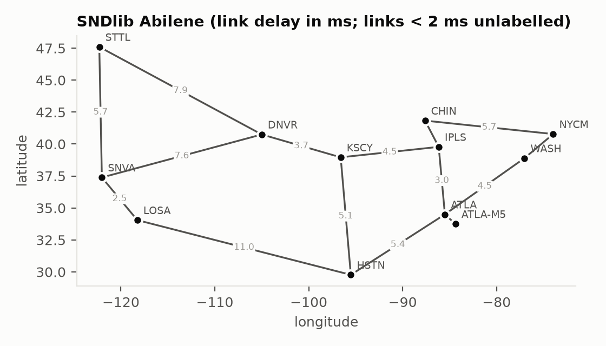
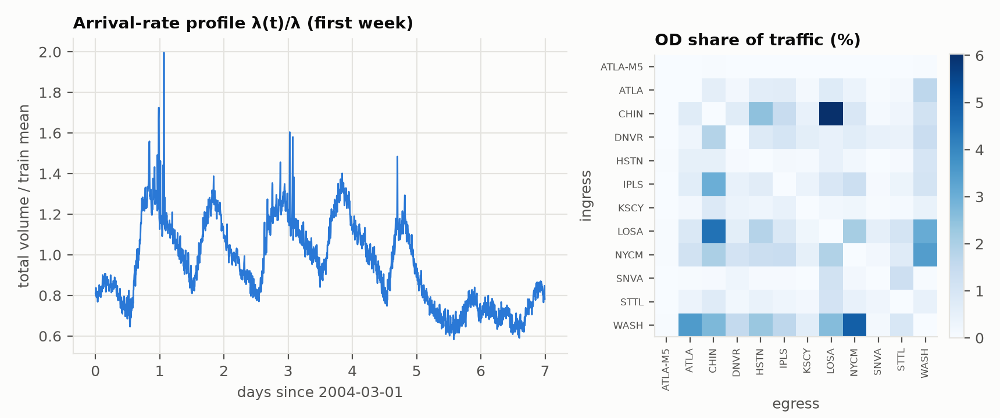
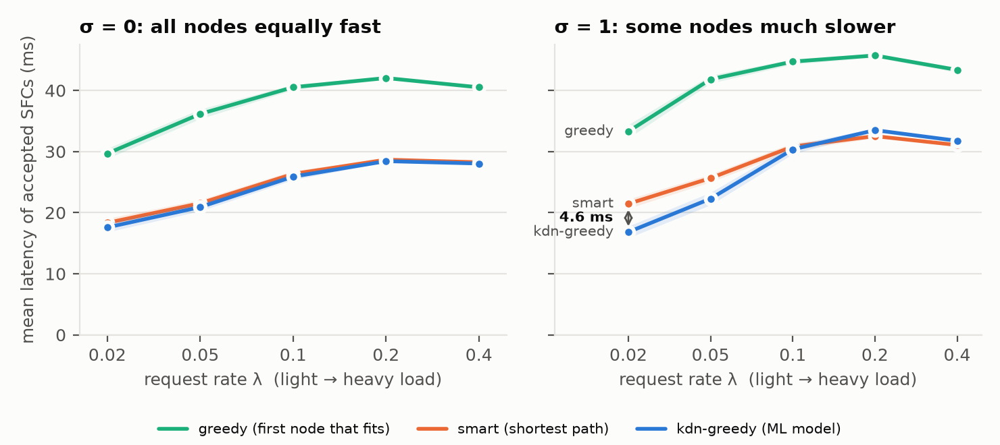

Projeye genel bakış: ML ile VNF yerleştirme
1. Tek paragrafta proje
Bir operatör ağına "trafiğimi NAT → Firewall → IDS'ten geçir" gibi servis istekleri geliyor. Ağın yöneticisi (kontrolcü) her bir yazılım ağ fonksiyonunu (VNF) hangi sunucuya koyacağına karar veriyor. Bazı sunucular yavaş, ama kontrolcü hangileri olduğunu bilmiyor. Soru şu:
Gerçek bir ağın (Abilene) topolojisi ve 2004 trafik kayıtları üzerinde bir simülatör kurduk. VNF gecikmesini tahmin eden bir XGBoost modeli eğittik ve bu modelle yerleştirme yapan yöntemi iki basit kuralla karşılaştırdık. Sonuç: ağ normal yükteyken (istekler neredeyse hiç reddedilmiyorken) model 3.4–4.6 ms (%13–22) daha hızlı yerleştirme yapıyor. Ağ kapasite sınırına dayandığında avantajı kayboluyor.
Bu yaklaşımın adı Knowledge-Defined Networking (KDN) (Mestres et al., 2017). Fikir şu: kontrolcü ağdan ölçüm toplasın, makine öğrenmesiyle ağın nasıl davrandığını öğrensin, kararlarını buna göre versin. Bu çalışma bu fikrin küçük, simülasyonda yapılmış bir denemesi.
2. Ne gerçek, ne bizim varsayımımız?
| Parça | Nereden geliyor | Durumu |
|---|---|---|
| Ağ: 12 şehir, 15 bağlantı, şehirler arası mesafe | SNDlib Abilene topolojisi | gerçek veri (bağlantı kapasitelerini ağ dolabilsin diye küçülttük) |
| Ne zaman kaç istek gelir, hangi şehirden hangi şehre | Abilene trafik matrisleri (2004) | gerçek veriden türetildi İsteklerin kendisi veride yok, biz üretiyoruz. |
| Her isteğin paket/akış sayısı ve VNF'lere bindirdiği CPU yükü | KDN VNF ölçümleri (Mestres et al.) | gerçek ölçümden ödünç |
| VNF tipleri (NAT, IDS…), zincirler, CPU/RAM ihtiyaçları | Ders projesinden; literatürde tipik örnekler | bizim seçimimiz |
| İşleme gecikmesi formülü | Kuyruk teorisinin standart formülü (M/M/1) | formül standart, içindeki sayılar bizim |
| Bazı sunucuların gizlice yavaş olması | Bizim varsayımımız | bizim varsayımımız |
| Yerleştirmeler ve ölçülen gecikmeler | Simülatör | simülasyon çıktısı |
3. Veriyi gözle gör
3a. Abilene topolojisi

3b. Abilene trafik matrisleri (gerçek, 2004)
Her 5 dakika için bir dosya var. Dosyadaki ham bir satır:
ATLAng_CHINng ( ATLAng CHINng ) 1 21.951643 UNLIMITED
Anlamı: 4 Mart 2004, 11:15'te, 5 dakika boyunca Atlanta'dan Chicago'ya ortalama 21.95 Mbps trafik gitti.
Gerçekten bir matris: satır = kaynak şehir, sütun = hedef şehir, 12×12. Elimizde 48 096 tane var. Aynı anın 4×4'lük bir parçası (Mbps):
kaynak \ hedef ATLA CHIN LOSA NYCM ATLA 0.0 22.0 10.3 13.8 CHIN 28.6 0.0 29.4 3.8 LOSA 17.6 199.1 0.0 44.3 NYCM 31.1 67.9 72.2 0.0
- Veride ne var: yalnızca "hangi iki şehir arasında ne kadar Mbps gitti". Ölçüm NetFlow ile, 100 paketten 1'i örneklenerek yapılmış.
- Veride ne yok: istek, VNF, yerleştirme, gecikme ve paket kaybı yok. NFV kavramı 2012'de ortaya çıktı.
- Eksik kısım: 1 Mart – 10 Eylül arasındaki 194 günün 167'si var. 27 gün eksik (çoğu 15 Mart – 1 Nisan). Tamamen sıfır olan matris yok.
- Kim, ne için kullandı: Yin Zhang ve arkadaşları, Network Anomography (IMC 2005). Ağdaki ani trafik sıçramalarının ve kesintilerin bu matrislerden otomatik tespit edilebildiğini gösterdiler. Veri seti sonra trafik matrisi tahmini çalışmalarında standart bir benchmark oldu.
- Biz neye kullandık: tarihe göre ikiye böldük. Mart–Haziran eğitim simülasyonlarında, Temmuz–Eylül test simülasyonlarında kullanılıyor (bkz. §6).
3c. KDN VNF ölçümleri (gerçek, Mestres et al. 2017)
Mestres ve arkadaşları bir sanal makinede VNF çalıştırmış, kampüs ağından kaydedilmiş trafiği ona tekrar oynatmış ve CPU tüketimini ölçmüş. Her satır 20 saniyelik bir trafik parçası: 86 trafik özelliği ve ölçülen CPU. Biz yalnızca iki özelliği (paket ve akış sayısı) ve CPU'yu kullanıyoruz:
VNF paket akış CPU Snort 48008 7371 210 Firewall 48008 7371 414 Snort 44551 5551 201 Firewall 44551 5551 392
Aynı trafik iki VNF'ten geçmiş ve Firewall iki kat CPU harcamış. Veri setinde 3 VNF var: Snort (saldırı tespiti, 1359 satır), Firewall (kural tabanlı güvenlik duvarı, 755 satır) ve OVS (yazılım switch, 1191 satır).
Mestres'in gösterdiği: bir VNF'in CPU tüketimi trafik özelliklerinden bir sinir ağıyla tahmin edilebiliyor.
Biz neye kullandık: Bir VNF'e sabit bir CPU ayrılır, ama gerçekte ne kadar harcadığı içinden geçen trafiğe bağlıdır. Bu ilişkiyi uydurmak yerine bu ölçümlerden aldık: çok paketli trafik daha çok CPU demek (ayrıntı §4). Ölçümlerdeki paket sayıları birbirine yakın (%90'ı 41 000–59 000 arası), bu yüzden harcanan CPU ortalamadan yalnızca ±%10 kadar sapıyor. Bizim simülatörde bu sapmayı yalnızca paket sayısı belirliyor; akış sayısı modele girdi olarak veriliyor ama yükü etkilemiyor.
4. Bir istek baştan sona
Kontrolcü kim? Yerleştirme kararını veren yazılım. Gerçek hayatta bu bir SDN kontrolcüsü ya da NFV orkestratörü. Bizim kodda bir fonksiyon: isteği ve ağın o anki durumunu alıyor, her VNF için bir sunucu döndürüyor. §7'deki üç yöntem üç farklı kontrolcü.
Simülatörde bir isteğin yolculuğu:
- Ne zaman gelir? Abilene matrisi o anda ağın ne kadar yoğun olduğunu söylüyor. Yoğun saatte daha çok istek geliyor. Örnek: ABD'de öğleden sonra toplam trafik ~3370 Mbps, sabah 6'da ~2260 Mbps; öğleden sonra ~1.5 kat daha fazla istek geliyor.
- Hangi şehirden hangi şehre? O anın matrisine göre çekiliyor. LOSA→CHIN 199 Mbps taşıyorsa, 3.8 Mbps taşıyan CHIN→NYCM'den çok daha sık seçiliyor.
- Hangi servis? Üç tipten biri rastgele seçiliyor:
Servis VNF zinciri Bant genişliği Web NAT → Firewall → TrafficMonitor 10 Mbps VoIP NAT → SBC → Firewall → IDS 20 Mbps Video NAT → DPI → VideoTranscoder 50 Mbps - Trafiği nasıl? Mestres'in Snort tablosundan bir satır çekiliyor; o satırın paket ve akış sayısı isteğe kopyalanıyor. Satır servise göre seçiliyor: Web'e paket sayısı en düşük üçte birlik dilimden (46 000'in altı), VoIP'e ortadaki dilimden, Video'ya en yüksek dilimden (50 000'in üstü). Trafik parçası gerçek; ağır servise ağır trafik vermek bizim seçimimiz.
- VNF'ler ne kadar CPU harcayacak? Her VNF'e sabit bir CPU ayrılıyor (NAT 10, DPI 20, VideoTranscoder 30 …;
bizim seçimimiz). Kabul/red kararı buna göre veriliyor. Gerçekte harcanan CPU ise trafiğe
göre değişiyor: ayrılanın ~%60'ı × r. r Mestres ölçümlerinden geliyor.
Örnek: 55 000 paketlik bir Video isteği. DPI için Snort ölçümlerinde 55 000 pakete en yakın 5 satıra bakılıyor; CPU'ları 202–210, Snort'un tipik (medyan) CPU'su 198. Seçilen satır 208 ise r = 208 ÷ 198 ≈ 1.05 ve sunucuya 0.6 × 20 × 1.05 ≈ 12.6 birim yük ekleniyor (100 üzerinden). Her VNF kendine en benzer ölçülmüş VNF'in verisine bakıyor (NAT ve Firewall → Firewall, IDS ve DPI → Snort, diğerleri → OVS). Az paketli bir Web isteğinde r 0.8–0.96'ya düşüyor.
Neden doğrudan bir CPU değeri vermiyoruz? Kontrolcü karar anında paket sayısını görebilir (siparişin trafiği bilinir), ama VNF'in gerçekte ne kadar CPU harcayacağını göremez. ML gözüyle: paket sayısı girdi, gerçek CPU tüketimi gizli taraf. Mestres verisi bu ikisi arasındaki ilişkiyi uydurmak yerine gerçek ölçümden almamızı sağlıyor. - Kontrolcü karar verir. Her VNF için bir sunucu seçiyor. Yer yoksa (CPU, RAM ya da bant yetmiyorsa) istek reddediliyor.
- Simülatör gecikmeyi hesaplar (§5). Kontrolcü bu hesabı göremiyor; simülatör "gerçek dünya" rolünü oynuyor.
- Süre dolar. İstek 10–600 zaman birimi sonra bitiyor, sunucular boşalıyor.

5. Gecikme nasıl hesaplanıyor?
Bir isteğin toplam gecikmesi iki parçadan oluşuyor:
- Yol gecikmesi: trafiğin kaynak şehir → VNF'ler → hedef şehir yolunda geçirdiği süre. Kontrolcü bunu haritadan tam olarak biliyor.
- İşleme gecikmesi: her VNF'in paketleri işlerken harcadığı süre. Kontrolcü bunu bilmiyor.
Simülatör işleme gecikmesini şöyle hesaplıyor:
işleme gecikmesi = s × κ ÷ (1 − ρ)
- s: VNF'in boş ve normal hızdaki bir sunucuda harcadığı süre. NAT 0.5 ms, IDS 2 ms, VideoTranscoder 5 ms. bizim seçimimiz
- κ: sunucunun gizli yavaşlık çarpanı. 1 = normal, 2 = iki kat yavaş, 0.5 = iki kat hızlı. bizim varsayımımız
- ρ: sunucunun doluluğu, 0 (boş) ile 0.95 arası. Sunucu doldukça bölen küçülüyor ve gecikme hızla artıyor.
Bu formül bizim icadımız değil. Kuyruk teorisinin klasik formülü (M/M/1, Kleinrock 1975) ve VNF yerleştirme çalışmalarında sık kullanılıyor. Biz bu formülü seçtik ve içindeki sayıları koyduk.
Gizli yavaşlık çarpanı (κ) nereden geliyor?
Veriden gelmiyor; bizim varsayımımız. Gerekçesi şu: gerçek veri merkezlerinde farklı nesil sunucular yan yana çalışır ve aynı VNF bazılarında daha yavaş koşar. Her şehre sabit bir çarpan verdik. Yayılımını σ ile ayarlıyoruz:
- σ = 0: bütün sunucular aynı hızda (hepsinin κ'sı 1). Öğrenilecek gizli bir fark yok.
- σ = 1: sunucular çok farklı. En hızlısı Indianapolis (0.18), en yavaşı Houston (5.65). Arada Atlanta 0.32, Los Angeles 0.58, New York 0.90, Chicago 2.25, Washington 3.16 gibi değerler var.
Örnek hesap
Eğitim tablosundan gerçek bir satır (σ = 1). Bir Video isteği geliyor:
NAT → Houston (κ = 5.65, doluluk 0.065): 0.5 × 5.65 ÷ (1 − 0.065) = 3.02 ms DPI → Sunnyvale (κ = 1.38, doluluk 0.127): 2 × 1.38 ÷ (1 − 0.127) = 3.15 ms VideoTranscoder → Atlanta (κ = 0.32, doluluk 0.188): 5 × 0.32 ÷ (1 − 0.188) = 1.95 ms
En ağır VNF (VideoTranscoder), hızlı Atlanta sunucusunda en hafif VNF'ten (NAT, yavaş Houston'da) daha kısa sürmüş. Model bu farkı öğrenmeye çalışıyor.
6. Model: neyi öğreniyor?
Eğitim tablosu nasıl oluştu?
- Simülatörü Mart–Haziran 2004 trafiğiyle çalıştırdık.
- VNF'leri rastgeleleştirilmiş bir kural yerleştirdi. Amaç, farklı sunucuları farklı doluluklarda görmek.
- Simülatör her VNF'in gecikmesini §5'teki formülle hesapladı ve bir satır olarak yazdı.
- Sonuç: σ seviyesi başına 212 621 satır. 170 559 satır eğitime, 42 062 satır doğrulamaya ayrıldı (farklı simülasyon tekrarlarından).
Yani evet, eğitimdeki yerleştirmeleri biz (simülatör) yaptık. Gerçek bir KDN kontrolcüsü bu tabloyu ağdan topladığı ölçümlerle doldururdu.
Girdiler ve hedef
- Girdiler (8 tane): hangi VNF, hangi sunucu, sunucunun o anki doluluğu, bu isteğin o sunucuya koyduğu VNF sayısı ve CPU miktarı, isteğin paket ve akış sayısı, ağın ortalama doluluğu. Hepsi karar anında görülebilen bilgiler.
- Hedef: o VNF'in işleme gecikmesi (σ = 1'de ortalama 3.2 ms).
- Model: XGBoost regresyon (150 ağaç, derinlik 5). Her σ için ayrı eğitiliyor.
Model gizli κ değerlerini görmüyor, ama "sunucu kimliği" girdisi sayesinde hangi sunucunun yavaş olduğunu verilerden öğrenebiliyor.
Test nasıl yapıldı?
Simülatörü bu sefer Temmuz–Eylül 2004 trafiğiyle çalıştırdık. Kararları §7'deki üç yöntem verdi ve simülatör gecikmeleri ölçtü. Tarih ayrımının tek işlevi, testteki istek akışının eğitimde görülenden farklı olması. Gecikmeler yine aynı formülden geldiği için bu ayrımı abartmamak gerek.
Model ne kadar iyi tahmin ediyor?
Doğrulama satırlarında R² = 0.997, ortalama mutlak hata 0.17 ms (σ = 1).
7. Karşılaştırılan üç yöntem
| Yöntem | Nasıl karar veriyor | Ne biliyor |
|---|---|---|
| greedy | Her VNF'i yeri olan ilk sunucuya koyuyor. | Sadece kapasite |
| smart | Her VNF'i, bir önceki duraktan en kısa yolla ulaşılan sunucuya koyuyor. | Harita (yol gecikmeleri) |
| kdn-greedy | Her VNF için yeri olan bütün sunucuları (en fazla 12) modele soruyor ("buraya koyarsam yol + işleme ne kadar sürer?") ve en kısa süreyi vereni seçiyor. | Harita + modelin öğrendikleri. Bizim yöntemimiz. |
Deney
- 2 senaryo: σ = 0 (sunucular eşit) ve σ = 1 (sunucular çok farklı).
- 5 yük seviyesi: istek geliş hızı λ = 0.02, 0.05, 0.1, 0.2, 0.4. Her seviyenin ağda ne anlama geldiği
(smart yöntemiyle, 30 tekrarın ortalaması):
"Büyük bir VNF daha alamayan" = boş CPU'su 30'un altına inmiş (VideoTranscoder 30 CPU istiyor). Gerçek bir operatör ağını genellikle üst iki satırdaki gibi işletir: yoğun saatlere ve arızalara pay bırakır, istekleri geri çevirmeye başlamadan kapasite ekler. Alt satırlar ağın taşma noktasını gösteren bir stres testi.λ Sunucuların ortalama doluluğu Büyük bir VNF daha alamayan sunucu Kabul edilen istek Durum 0.02 %23 12'de 1 %99.6 normal yük 0.05 %55 12'de 5 %97 normal yük 0.1 %82 12'de 9 %78 sınıra yakın 0.2 %92 12'de 11 %48 kapasite sınırında 0.4 %96 12'de 12 %28 kapasite sınırında - 30 tekrar: her durum 30 farklı rastgele başlangıçla çalıştırıldı. Aynı tekrarda üç yöntem de tıpatıp aynı istekleri görüyor.
- Ölçüt: kabul edilen isteklerin ortalama uçtan uca gecikmesi (ms). Ayrıca kabul oranı ve karar süresi.
8. Sonuçlar

| Senaryo | Yöntem | λ = 0.02 | 0.05 | 0.1 | 0.2 | 0.4 |
|---|---|---|---|---|---|---|
| σ = 0 | greedy | 29.68 | 36.15 | 40.52 | 42.03 | 40.51 |
| (sunucular eşit) | smart | 18.33 | 21.53 | 26.33 | 28.67 | 28.24 |
| kdn-greedy | 17.59 | 20.91 | 25.89 | 28.43 | 28.04 | |
| σ = 1 | greedy | 33.29 | 41.83 | 44.71 | 45.72 | 43.36 |
| (sunucular çok farklı) | smart | 21.45 | 25.65 | 30.82 | 32.52 | 31.07 |
| kdn-greedy | 16.82 | 22.28 | 30.35 | 33.50 | 31.76 |
Üç bulgu
- Normal yükte model kazandırıyor ve kazanç sunucular arasındaki farkla büyüyor. λ = 0.02 ve 0.05'te kdn-greedy, smart'tan σ = 0'da 0.6–0.7 ms, σ = 1'de 3.4–4.6 ms (%13–22) daha hızlı. λ = 0.1'de kazanç 0.5 ms'ye iniyor. σ = 0'daki küçük kazanç, modelin sunucu doluluğunu da görmesinden geliyor; smart yalnızca yola bakıyor.
- Ağ kapasite sınırındayken kazanç yok. σ = 1'de, λ ≥ 0.2'de (isteklerin yarısından fazlası reddedilirken) kdn-greedy, smart'tan 0.7–1.0 ms daha yavaş. Sebep tahmin hatası değil: model her isteği tek başına en hızlı sunucuya koyuyor, hızlı sunucular dolunca sonraki isteklere yer kalmıyor. Gerçek gecikmeyi tam bilen bir kontrolcü de aynı sonucu alıyor; yani sorun modelde değil, "her isteği tek tek en iyi yere koy" yaklaşımında. Pratikte bir operatör ağını bu bölgede işletmez, kapasite ekler.
- greedy her durumda açık ara en kötü. Yola bakmadığı için trafik dolambaçlı yollardan gidiyor.
Karar süresi önemli mi? kdn-greedy karar başına 3–9 ms harcıyor, smart 0.4 ms'nin altında. Ama bu süre servis siparişi başına bir kez ödeniyor. VNF'i sunucuda fiilen ayağa kaldırmak (sanal makine ya da container başlatmak) genellikle saniyeler–dakikalar sürer, sipariş de saatlerce–aylarca yaşar. Kazanılan 3.4–4.6 ms ise servisin bütün ömrü boyunca her pakete yansıyan gecikme. Yani iki "ms" aynı şey değil: 9 ms'lik karar süresi pratikte önemsiz. Bu sayı ancak ölçeklenebilirlik göstergesi olarak anlamlı: kdn-greedy her VNF için bütün sunucuları modele soruyor, bu yüzden süre sunucu sayısıyla doğrusal artıyor. Ölçüm Python'da, tek bir bilgisayarda yapıldı; mutlak değeri değil, büyüklük sırasını gösteriyor.
Sağlamlık kontrolü: sonuç trafik verisine bağlı mı?
İki gerçek trafik verisini ayrı ayrı ve birlikte çıkarıp σ = 1 deneyini tekrarladık (30 tekrar). Mestres yükleri yerine her VNF sabit yük bindiriyor (r = 1); Abilene matrisleri yerine istekler sabit hızla ve rastgele şehir çiftleri arasında geliyor. Modeli her seferinde yeniden eğitmemek için kdn-greedy yerine gerçek gecikmeyi bilen oracle-greedy kullanıldı; asıl deneyde ikisinin sonucu en fazla 0.2 ms farklı.
| Smart'a göre kazanç (ms) | λ = 0.02 | 0.05 | 0.1 | 0.2 | 0.4 |
|---|---|---|---|---|---|
| Gerçek verilerle | 4.6 | 3.4 | 0.4 | −0.8 | −0.8 |
| Mestres yerine sabit yük | 4.5 | 3.2 | 0.3 | −0.8 | −0.6 |
| Abilene matrisi yerine sabit hız + rastgele şehir çifti | 5.0 | 3.3 | −0.1 | −1.1 | −0.7 |
| İkisi de yok | 4.9 | 3.2 | −0.2 | −1.0 | −0.7 |
Mestres verisi çıkınca kazanç en fazla 0.2 ms, Abilene matrisleri de çıkınca en fazla 0.6 ms değişiyor; sonucun yönü hiçbir satırda değişmiyor. Yani kazancı trafik verisi değil, sunucular arasındaki gizli hız farkı ve şehirler arası mesafe belirliyor. Gerçek trafik verileri simülasyonu gerçekçi yapıyor, ama sonucu taşıyan onlar değil.
9. Sınırlar
- Gecikmeler gerçek ölçüm değil, bizim formülümüzden geliyor. Gerçek ölçümlerle hem tahmin hem kazanç daha düşük olabilir.
- Yavaş sunucular bizim varsayımımız. Kazancın büyüklüğü bu varsayıma bağlı: fark yoksa 0.7 ms, büyük fark varsa 4.6 ms.
- Tek bir ağ var (12 şehir). Daha büyük ağlarda sonuç ve karar süresi farklı olabilir.
- Gerçek trafik verileri (Abilene matrisleri, Mestres ölçümleri) sonucu neredeyse hiç değiştirmiyor (§8, sağlamlık kontrolü). "Gerçek veriye dayalı" vurgusu yapılmamalı.
- Her istek kendi VNF kopyalarını alıyor. Gerçek sistemlerdeki VNF paylaşımı ve ölçekleme modelde yok.
- Model bir kez eğitiliyor ve sonra güncellenmiyor.
- Ağ kapasite sınırındayken kazanç yok (yaklaşık 1 ms kayıp var). Bunu azaltmak için gelecekteki istekleri de hesaba katan bir yöntem gerekir (ör. pekiştirmeli öğrenme); bu çalışmanın kapsamı dışında. Pratikte bu bölgede operatörün asıl çaresi kapasite eklemek.
- kdn-greedy ilk denemelerden sonra tasarlandı. İlk sürümde model yalnızca hazır bir aday listesinden seçiyordu ve daha az kazandırıyordu. Bu makalede açıkça yazılmalı.
10. Referanslar
- A. Mestres et al., "Knowledge-Defined Networking," ACM SIGCOMM Computer Communication Review, 47(3), 2017. — KDN fikri ve VNF CPU ölçüm veri seti.
- D. D. Clark, C. Partridge, J. C. Ramming, J. T. Wroclawski, "A Knowledge Plane for the Internet," ACM SIGCOMM, 2003. — KDN'in dayandığı "knowledge plane" fikri.
- S. Orlowski, R. Wessäly, M. Pióro, A. Tomaszewski, "SNDlib 1.0 — Survivable Network Design Library," Networks, 55(3), 2010. — Abilene topolojisi ve trafik matrislerinin indirildiği kütüphane.
- Y. Zhang, Z. Ge, A. Greenberg, M. Roughan, "Network Anomography," ACM/USENIX IMC, 2005. — Abilene trafik matrislerinin kaynağı.
- L. Kleinrock, Queueing Systems, Volume 1: Theory, Wiley, 1975. — İşleme gecikmesi formülü (M/M/1).
- T. Chen, C. Guestrin, "XGBoost: A Scalable Tree Boosting System," KDD, 2016. — Gecikme modeli.
11. Repo ve çalıştırma
src/ sfc.py servis tipleri ve VNF'ler data.py SNDlib ve KDN veri setlerini okuyan fonksiyonlar environment.py simülatör: ağ, istek akışı, gizli yük ve gecikme placement.py ortak yerleştirme kodu: kapasite kontrolü, yol bulma, ayır/serbest bırak features.py modelin girdileri policies.py yöntemler (greedy, smart, kdn-greedy ve repodaki diğerleri) experiment.py deney, eğitim tablosu üretimi, model eğitimi analysis.py özet tablolar scripts/ run.py (deney hattı), ablation_data.py (sağlamlık kontrolü), make_figures.py, fetch_data.sh results/ her senaryo için sonuç CSV'leri ve findings.md tests/ simülatör ve yöntemler için testler
python3 -m venv .venv && .venv/bin/pip install -r requirements.txt ./run_all.sh # veriyi indir → simülasyonlar → figürler → testler (~30 dk, 12 çekirdek)
Her koşu sabit bir rastgele tohumla (seed) yapılıyor; karar süresi dışında bütün sonuçlar her çalıştırmada birebir aynı çıkıyor.